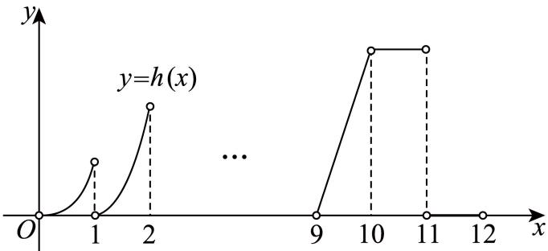
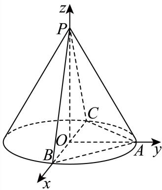
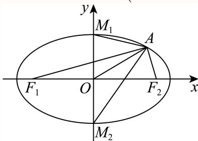
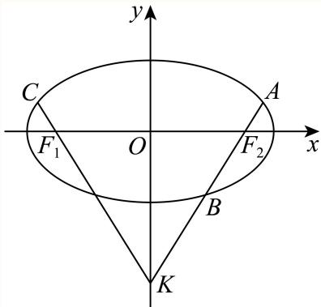

01 【来源：24春考·1】
查看所属专题函数 的定义域是______。
答案与解析
答案
(0,+∞)
解析
对数真数须为正，故定义域为 。
整卷阅读 · 教师版 · 21 题
按来源题号排列；内容来自分类汇编，仍需回源核对。
没有找到匹配题目。
函数 的定义域是______。
(0,+∞)
对数真数须为正，故定义域为 。
直线 的倾斜角大小为______。
45°
[分析]：把已知直线的方程变形后，找出直线的斜率，根据直线斜率与倾斜角的关系，即直线的斜率等于倾斜角的正切值，得到倾斜角的正切值，由倾斜角的范围，利用特殊角的三角函数值即可求出倾斜角的度数.
由直线x − y + 1 = 0变形得：y = x + 1
所以该直线的斜率 k =1,
设直线的倾斜角为 α，即 tan α = 1,
∵α∈[0,180°),
故答案为：45°.
已知 ，则 ______。
，所以 。
展开式中 的系数为______。
15
根据给定条件，利用二项式定理直接求出结果.
展开式中令 的项为
所以 展开式中 的系数为15.
故答案为:15
三角形 中，，，，则 ______。
，且 。由正弦定理，
已知 ， 的最小值为______。
12
，等号成立当且仅当 。结合 ，可取 或两者同时取负，故最小值为 。
数列 ，，， 的取值范围为______。
，故 ，得 。
三角形三边长为 5，6，7，则以边长为 6 的两个顶点为焦点，过另外一个顶点的双曲线的离心率为______。
3
由双曲线定义得 ，又 ，所以 ，离心率 。
已知 ， 求 的 的取值范围______。
(-∞,1]
由定义 当 时， 化为 ，得 。
当 时， 恒成立。
故解集为 。
已知四棱柱 ，底面 为平行四边形，，，且 ，则异面直线 与 的夹角余弦值为______。

由 、，以及平行四边形中 、，题设内积差化为 故异面直线夹角的余弦为 。
正方形草地 边长 1.2， 到 距离为 0.2， 到 距离为 0.4，有个圆形通道经过 ，且经过 上一点，求圆形通道的周长______。（精确到 0.01）

按原题文字条件不能唯一确定；若补充与 相切并采用图示位置，原解为约 。
若补充圆与 相切的条件，取 为原点，。
圆心在 的垂直平分线 上，设为 ，由切线条件半径为 。
代入 得 ，从而 。
结合图形应取较小值，周长 。
原题仅写圆经过 上一点，未明确相切；因此仅按文字条件无法唯一确定圆及周长。上述 是原解析添加相切条件后的结果。

，，，，任意 ，满足 ，求有序数列 有______对。
48
四个原数的两两和为 。
这六个和互异，所以待求四数也互异。
先按大小排列为 ，必有 。
余下两和有两种分配：若 ，得 ；若 ，得 。
二者均满足六个和的要求，每组四数均可任意排列，故共有 组有序四元组。
，，下列不等式恒成立的是（ ）。
A.
B.
C.
D.
B
两侧同时加 ，得到 ，故 B 正确。A 可取 作反例；C、D 均可取 作反例。
空间中有两个不同的平面 和两条不同的直线 ，则下列说法中正确的是（ ）。
A. 若 ，，，则 ；
B. 若 ，，，则 ；
C. 若 ，，，则 ；
D. 若 ，，，则 。
A
A： 分别垂直于互相垂直的平面 ，其方向分别为两平面的法向，故 ，正确。
B： 且 并不能推出 。
C：分别平行于两平行平面的直线可以相交、平行或异面。
D： 可以包含在 内，不能保证 。
故选 A。
有四种礼盒，前三种里面分别仅装有中国结、记事本、笔袋，第四个礼盒里面三种礼品都有，现从中任选一个盒子，设事件 ：所选盒中有中国结，事件 ：所选盒中有记事本，事件 ：所选盒中有笔袋，则（ ）。
A. 事件 与事件 互斥；
B. 事件 与事件 相互独立；
C. 事件 与事件 互斥；
D. 事件 与事件 相互独立。
B
四种礼盒等可能。
，而 ，故A与B独立，B正确。
第四种礼盒能同时发生A与B，因此A错误；也能同时发生A与 ，所以C错误。
最后 ，但 ，所以D错误。

来源条件待核：题目未明确函数定义域及整数点的取值，结论可能受此影响。
现定义如下：当 时（），若 ，则称 为延展函数。已知当 时， 且 ，且 均为延展函数，则以下结论（ ）。
（1）存在 与 有无穷个交点；
（2）存在 与 有无穷个交点。
A. （1）（2）都成立
B. （1）（2）都不成立
C. （1）成立，（2）不成立
D. （1）不成立，（2）成立
D（需补充条件）
原答案 D 需要补充定义域等条件。例如将定义域限定为非负整数之间的开区间的并集时，以下解析成立。若定义域为正半轴且在正整数 m 处取 g(m)=m+1，同时在各开区间按题意延展，则直线 y=x+1 与 g 的图像有无穷个交点，结论（1）成立；因此原文字条件不足以唯一确定答案。
由延展定义逐次求导，在每个 （ 为非负整数）上，有 ，因此始终 。
当 时， 只有在一个有界区间内可能落在 ，且每段指数曲线与直线至多有两个交点，所以不可能有无穷多个交点，（1）不成立。
另一方面，当 、 时，；当 时 。
特别地， 时 ，故取 、，直线与这一段重合，有无穷多交点，（2）成立。
故选 D。


已知 ，。
（1）设 ，求 ， 的值域；
（2）， 的最小正周期为 ，若在 上恰有 3 个零点，求 的取值范围。
（1） 时，令 ，则 。正弦在此区间最大值为 ，最小值为 ，故值域为 。
（2）由周期 得 。
零点为 。
从 往右依次为 ，因此按题设恰有三个零点，得 。
如图， 为圆锥三条母线，。

（1）证明 ；
（2）若圆锥侧面积为 ， 为底面直径，，求二面角 的大小。
证明见解析
（1）取 中点 。
由 ，得 。
是平面 内两相交直线，故 平面 ，从而 。
（2）底面半径为 ，由侧面积 得母线 ，高 。
建立坐标系取 。
平面 的法向量可分别取 、。
两法向量夹角余弦为 。
由 在棱 两侧的位置，所求二面角为钝角，故为 。

水果分为一级果和二级果，共 136 箱，其中一级果 102 箱，二级果 34 箱。
（1）随机挑选两箱水果，求恰好一级果和二级果各一箱的概率；
（2）进行分层抽样，共抽 8 箱水果，求一级果和二级果各几箱；
（3）抽取若干箱水果，其中一级果共 120 个，单果质量平均数为 303.45 克，方差为 603.46；二级果 48 个，单果质量平均数为 240.41 克，方差为 648.21；求 168 个水果的方差和平均数，并预估果园中单果的质量。
（1）；（2）一级果6箱、二级果2箱；（3）样本均值约285.44克、方差约1427.27；原解总体估计287.69克依赖按箱数加权的附加口径，见校订说明。
（1）所求概率为 。
（2）一级果与二级果箱数比为 ，所以抽取 箱一级果和 箱二级果。
（3）抽得一级果 个、二级果 个，故样本均值 合并方差为
原解析将两级样本单果均值按箱数比3:1加权，得到 克。
校订说明：总体单果均重取决于两级水果的总体个数比例，而箱数比未必等于个数比。若两级总体个数比为3:1，且分别以样本均值估计各级总体均值，则可得到287.69克；题目未给出足以确认该比例的信息。285.44克是168个样本果的均值，也可作为直接估计，但其代表性取决于抽样方式。本题保留待复核。
在平面直角坐标系 中，已知点 为椭圆 上一点， 分别为椭圆的左、右焦点。
（1）若点 的横坐标为 2，求 的长；
（2）设 的上、下顶点分别为 ，记 的面积为 ， 的面积为 ，若 ，求 的取值范围；
（3）若点 在 轴上方，设直线 与 交于点 ，与 轴交于点 ， 延长线与 交于点 ，是否存在 轴上方的点 ，使得 成立？若存在，请求出点 的坐标；若不存在，请说明理由。
（1）；（2）；（3）存在，。
（1） 在椭圆上，故 ，，于是 。
（2）设 且 。
两面积为 ，条件给出 。
结合 ，得 ，从而 右端点由 可以取到。
（3）设 ，。
由对称性 。
题设向量和成比例，给出 与 平行，故 。
设 ，联立椭圆得 。
韦达定理给出 由 解得 ，所以 。
于是存在 ，代回向量条件成立。
校订说明：原解析第（2）问漏掉可取的右端点，区间应右闭。


记 ，。
（1）若 ，求 和 ；
（2）若 ，求证：对于任意 ，都有 ，且存在 ，使得 ；
（3）已知定义在 上 有最小值，求证：“ 是偶函数”的充要条件是“对于任意正实数 ，均有 ”。
；。
证明见解析。
证明见解析。
（1），。
（2）令 ，则 。
时， 在 递增，最小值为 ； 时最小值为 ； 时最小值为 。
故任意实数 均有 ，且 时 。
（3）必要性：若 为偶函数，通过代换 ，有 充分性：设 的全局最小值为 。
任意 且 时，两集合的最小值分别为 和 ，由集合相等得 。
若 ，取 知 ；对 ，、，故两集合最小值仍为 和 ，从而 。
若 ，前一步已覆盖所有 。
结合 显然成立，得到 为偶函数。
校订说明：原解析中 时辅助函数导数的符号及部分单调区间文字有误，已按 修正。